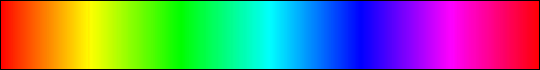

- java.lang.Object
-
- java.awt.Component
-
- java.awt.Container
-
- javax.swing.JComponent
-
- javax.swing.JPanel
-
- org.sm.smtools.swing.util.JGradientColorRamp
-
- All Implemented Interfaces:
- java.awt.image.ImageObserver, java.awt.MenuContainer, java.io.Serializable, javax.accessibility.Accessible
public final class JGradientColorRamp extends javax.swing.JPanelTheJGradientColorRampclass provides a gradient colour ramp.A gradient colour ramp provides a visual display of a bar with a certain specified spectrum:
Gray scale:

Jet:

Copper:

Bone:

Green-red diverging:

Hot:
Discontinuous blue-white-green:
Discontinuous dark-red-yellow:
Black and white:

Hue/saturation/brightness (HSB):
Red:

Green:
Blue:
Yellow:

Cyan:
Magenta:

Custom:
Dependendant on the colours specified.A gradient colour ramp can have four orientations (see
JGradientColorRamp.EOrientation):- horizontal left to right (tick marks are supported),
- horizontal right to left (tick marks are supported),
- vertical bottom to top
- and vertical top to bottom.
This class has also one method that can be used to derive a
Colorthat is linearly interpolated across the specified spectrum:Color interpolatedColor = myGradientColorRamp.interpolate(0.6);This corresponds to the following interpolation scheme (dependent on the colour map):

The value can also be indicated on the colour ramp itself.
All documentation is written in British English, except for the API-code, which was kept in American English for compatability with the Java API interface.
Note that this class cannot be subclassed!
- Version:
- 02/01/2013
- Author:
- Sven Maerivoet
- See Also:
- Serialized Form
-
-
Nested Class Summary
Nested Classes Modifier and Type Class and Description classJGradientColorRamp.CustomColorMapComponentA container class for a custom colour map component.static classJGradientColorRamp.EColorMapThe various supported colour maps.static classJGradientColorRamp.EOrientationThe supported horizontal and vertical orientations for the gradient colour ramp.-
Nested classes/interfaces inherited from class javax.swing.JPanel
javax.swing.JPanel.AccessibleJPanel
-
Nested classes/interfaces inherited from class javax.swing.JComponent
javax.swing.JComponent.AccessibleJComponent
-
-
Field Summary
-
Fields inherited from class javax.swing.JComponent
listenerList, TOOL_TIP_TEXT_KEY, ui, UNDEFINED_CONDITION, WHEN_ANCESTOR_OF_FOCUSED_COMPONENT, WHEN_FOCUSED, WHEN_IN_FOCUSED_WINDOW
-
-
Constructor Summary
Constructors Constructor and Description JGradientColorRamp()Constructs aJGradientColorRampobject.JGradientColorRamp(JGradientColorRamp.EColorMap colorMap)Constructs aJGradientColorRampobject with a specified colour map.JGradientColorRamp(JGradientColorRamp.EOrientation orientation, int width, int height)Constructs aJGradientColorRampobject with the specified orientation and size.JGradientColorRamp(JGradientColorRamp.EOrientation orientation, JGradientColorRamp.EColorMap colorMap, int width, int height)Constructs aJGradientColorRampobject with the specified orientation and size.
-
Method Summary
All Methods Instance Methods Concrete Methods Modifier and Type Method and Description voidclearAllCustomColorMapComponents()Clears all components from the custom colour map.voiddisableValueIndication()Disables the indication of values.voidenableValueIndication()Enables the indication of values.java.util.TreeMap<java.lang.Integer,JGradientColorRamp.CustomColorMapComponent>getAllCustomColorMapComponents()Returns all components of the custom colour map.JGradientColorRamp.EColorMapgetColorMap()Returns the colour map that is used.java.awt.DimensiongetMaximumSize()java.awt.DimensiongetMinimumSize()java.awt.DimensiongetPreferredSize()voidindicateValue(double value)Instructs to indicate the specified valuejava.awt.Colorinterpolate(double u)Derives aColorthat is linearly interpolated across a spectrum.voidpaintComponent(java.awt.Graphics g)voidremoveCustomColorMapComponent(int id)Removes a component from the custom colour map.voidsetAllCustomColorMapComponents(java.util.TreeMap<java.lang.Integer,JGradientColorRamp.CustomColorMapComponent> colorMapComponents)Sets all components of the custom colour map.voidsetColorMap(JGradientColorRamp.EColorMap colorMap)Changes the colour map that is used.voidsetCustomColorMapComponent(int id, double level, java.awt.Color color)Adds or updates a component in the custom colour map.voidsetMaximumSize(java.awt.Dimension dimension)voidsetMinimumSize(java.awt.Dimension dimension)voidsetPreferredSize(java.awt.Dimension dimension)voidsetTickMarks(double lowerTickValue, java.lang.String lowerTickValuePrefix, double higherTickValue, java.lang.String higherTickValuePrefix, java.lang.String tickValuePrefix, java.lang.String tickValueSuffix, int nrOfTickMarks, int nrOfDecimals)Sets the optional tick marks for the gradient colour ramp.-
Methods inherited from class javax.swing.JPanel
getAccessibleContext, getUI, getUIClassID, paramString, setUI, updateUI
-
Methods inherited from class javax.swing.JComponent
addAncestorListener, addNotify, addVetoableChangeListener, computeVisibleRect, contains, createToolTip, disable, enable, firePropertyChange, firePropertyChange, firePropertyChange, fireVetoableChange, getActionForKeyStroke, getActionMap, getAlignmentX, getAlignmentY, getAncestorListeners, getAutoscrolls, getBaseline, getBaselineResizeBehavior, getBorder, getBounds, getClientProperty, getComponentGraphics, getComponentPopupMenu, getConditionForKeyStroke, getDebugGraphicsOptions, getDefaultLocale, getFontMetrics, getGraphics, getHeight, getInheritsPopupMenu, getInputMap, getInputMap, getInputVerifier, getInsets, getInsets, getListeners, getLocation, getNextFocusableComponent, getPopupLocation, getRegisteredKeyStrokes, getRootPane, getSize, getToolTipLocation, getToolTipText, getToolTipText, getTopLevelAncestor, getTransferHandler, getVerifyInputWhenFocusTarget, getVetoableChangeListeners, getVisibleRect, getWidth, getX, getY, grabFocus, hide, isDoubleBuffered, isLightweightComponent, isManagingFocus, isOpaque, isOptimizedDrawingEnabled, isPaintingForPrint, isPaintingOrigin, isPaintingTile, isRequestFocusEnabled, isValidateRoot, paint, paintBorder, paintChildren, paintImmediately, paintImmediately, print, printAll, printBorder, printChildren, printComponent, processComponentKeyEvent, processKeyBinding, processKeyEvent, processMouseEvent, processMouseMotionEvent, putClientProperty, registerKeyboardAction, registerKeyboardAction, removeAncestorListener, removeNotify, removeVetoableChangeListener, repaint, repaint, requestDefaultFocus, requestFocus, requestFocus, requestFocusInWindow, requestFocusInWindow, resetKeyboardActions, reshape, revalidate, scrollRectToVisible, setActionMap, setAlignmentX, setAlignmentY, setAutoscrolls, setBackground, setBorder, setComponentPopupMenu, setDebugGraphicsOptions, setDefaultLocale, setDoubleBuffered, setEnabled, setFocusTraversalKeys, setFont, setForeground, setInheritsPopupMenu, setInputMap, setInputVerifier, setNextFocusableComponent, setOpaque, setRequestFocusEnabled, setToolTipText, setTransferHandler, setUI, setVerifyInputWhenFocusTarget, setVisible, unregisterKeyboardAction, update
-
Methods inherited from class java.awt.Container
add, add, add, add, add, addContainerListener, addImpl, addPropertyChangeListener, addPropertyChangeListener, applyComponentOrientation, areFocusTraversalKeysSet, countComponents, deliverEvent, doLayout, findComponentAt, findComponentAt, getComponent, getComponentAt, getComponentAt, getComponentCount, getComponents, getComponentZOrder, getContainerListeners, getFocusTraversalKeys, getFocusTraversalPolicy, getLayout, getMousePosition, insets, invalidate, isAncestorOf, isFocusCycleRoot, isFocusCycleRoot, isFocusTraversalPolicyProvider, isFocusTraversalPolicySet, layout, list, list, locate, minimumSize, paintComponents, preferredSize, printComponents, processContainerEvent, processEvent, remove, remove, removeAll, removeContainerListener, setComponentZOrder, setFocusCycleRoot, setFocusTraversalPolicy, setFocusTraversalPolicyProvider, setLayout, transferFocusDownCycle, validate, validateTree
-
Methods inherited from class java.awt.Component
action, add, addComponentListener, addFocusListener, addHierarchyBoundsListener, addHierarchyListener, addInputMethodListener, addKeyListener, addMouseListener, addMouseMotionListener, addMouseWheelListener, bounds, checkImage, checkImage, coalesceEvents, contains, createImage, createImage, createVolatileImage, createVolatileImage, disableEvents, dispatchEvent, enable, enableEvents, enableInputMethods, firePropertyChange, firePropertyChange, firePropertyChange, firePropertyChange, firePropertyChange, firePropertyChange, getBackground, getBounds, getColorModel, getComponentListeners, getComponentOrientation, getCursor, getDropTarget, getFocusCycleRootAncestor, getFocusListeners, getFocusTraversalKeysEnabled, getFont, getForeground, getGraphicsConfiguration, getHierarchyBoundsListeners, getHierarchyListeners, getIgnoreRepaint, getInputContext, getInputMethodListeners, getInputMethodRequests, getKeyListeners, getLocale, getLocation, getLocationOnScreen, getMouseListeners, getMouseMotionListeners, getMousePosition, getMouseWheelListeners, getName, getParent, getPeer, getPropertyChangeListeners, getPropertyChangeListeners, getSize, getToolkit, getTreeLock, gotFocus, handleEvent, hasFocus, imageUpdate, inside, isBackgroundSet, isCursorSet, isDisplayable, isEnabled, isFocusable, isFocusOwner, isFocusTraversable, isFontSet, isForegroundSet, isLightweight, isMaximumSizeSet, isMinimumSizeSet, isPreferredSizeSet, isShowing, isValid, isVisible, keyDown, keyUp, list, list, list, location, lostFocus, mouseDown, mouseDrag, mouseEnter, mouseExit, mouseMove, mouseUp, move, nextFocus, paintAll, postEvent, prepareImage, prepareImage, processComponentEvent, processFocusEvent, processHierarchyBoundsEvent, processHierarchyEvent, processInputMethodEvent, processMouseWheelEvent, remove, removeComponentListener, removeFocusListener, removeHierarchyBoundsListener, removeHierarchyListener, removeInputMethodListener, removeKeyListener, removeMouseListener, removeMouseMotionListener, removeMouseWheelListener, removePropertyChangeListener, removePropertyChangeListener, repaint, repaint, repaint, resize, resize, setBounds, setBounds, setComponentOrientation, setCursor, setDropTarget, setFocusable, setFocusTraversalKeysEnabled, setIgnoreRepaint, setLocale, setLocation, setLocation, setName, setSize, setSize, show, show, size, toString, transferFocus, transferFocusBackward, transferFocusUpCycle
-
-
-
-
Constructor Detail
-
JGradientColorRamp
public JGradientColorRamp()
Constructs aJGradientColorRampobject.The gradient colour ramp has by default a horizontal orientation (going from left to right) with a width of 100 pixels and a height of 20 pixels; the jet colour map is used by default.
-
JGradientColorRamp
public JGradientColorRamp(JGradientColorRamp.EColorMap colorMap)
Constructs aJGradientColorRampobject with a specified colour map.The gradient colour ramp has by default a horizontal orientation (going from left to right) with a width of 100 pixels and a height of 20 pixels.
- Parameters:
colorMap- the colour map to use
-
JGradientColorRamp
public JGradientColorRamp(JGradientColorRamp.EOrientation orientation, int width, int height)
Constructs aJGradientColorRampobject with the specified orientation and size.The jet colour map is used by default.
- Parameters:
orientation- the orientation of the gradient colour ramp (JGradientColorRamp.EOrientation)width- the width of the gradient colour ramp (expressed in pixels)height- the height of the gradient colour ramp (expressed in pixels)
-
JGradientColorRamp
public JGradientColorRamp(JGradientColorRamp.EOrientation orientation, JGradientColorRamp.EColorMap colorMap, int width, int height)
Constructs aJGradientColorRampobject with the specified orientation and size.- Parameters:
orientation- the orientation of the gradient colour ramp (JGradientColorRamp.EOrientation)colorMap- the colour map to usewidth- the width of the gradient colour ramp (expressed in pixels)height- the height of the gradient colour ramp (expressed in pixels)
-
-
Method Detail
-
clearAllCustomColorMapComponents
public void clearAllCustomColorMapComponents()
Clears all components from the custom colour map.
-
disableValueIndication
public void disableValueIndication()
Disables the indication of values.
-
enableValueIndication
public void enableValueIndication()
Enables the indication of values.
-
getAllCustomColorMapComponents
public java.util.TreeMap<java.lang.Integer,JGradientColorRamp.CustomColorMapComponent> getAllCustomColorMapComponents()
Returns all components of the custom colour map.- Returns:
- a
TreeMapcontaining all the custom colour map components
-
getColorMap
public JGradientColorRamp.EColorMap getColorMap()
Returns the colour map that is used.- Returns:
- the colour map that is used
-
getMaximumSize
public java.awt.Dimension getMaximumSize()
- Overrides:
getMaximumSizein classjavax.swing.JComponent
-
getMinimumSize
public java.awt.Dimension getMinimumSize()
- Overrides:
getMinimumSizein classjavax.swing.JComponent
-
getPreferredSize
public java.awt.Dimension getPreferredSize()
- Overrides:
getPreferredSizein classjavax.swing.JComponent
-
indicateValue
public void indicateValue(double value)
Instructs to indicate the specified value- Parameters:
value- the value to indicate
-
interpolate
public java.awt.Color interpolate(double u)
Derives aColorthat is linearly interpolated across a spectrum.Note that the value of
uis clipped in the interval [0,1].- Parameters:
u- the value to use when interpolating the spectrum- Returns:
- a linearly interpolated value across a spectrum
-
paintComponent
public void paintComponent(java.awt.Graphics g)
- Overrides:
paintComponentin classjavax.swing.JComponent
-
removeCustomColorMapComponent
public void removeCustomColorMapComponent(int id)
Removes a component from the custom colour map.- Parameters:
id- the ID of the component
-
setAllCustomColorMapComponents
public void setAllCustomColorMapComponents(java.util.TreeMap<java.lang.Integer,JGradientColorRamp.CustomColorMapComponent> colorMapComponents)
Sets all components of the custom colour map.- Parameters:
colorMapComponents- aTreeMapcontaining all the custom colour map components
-
setColorMap
public void setColorMap(JGradientColorRamp.EColorMap colorMap)
Changes the colour map that is used.- Parameters:
colorMap- the colour map to use
-
setCustomColorMapComponent
public void setCustomColorMapComponent(int id, double level, java.awt.Color color)Adds or updates a component in the custom colour map.- Parameters:
id- the ID of the componentlevel- the level of the component (between 0.0 and 1.0)color- theColorto associate with the component
-
setMaximumSize
public void setMaximumSize(java.awt.Dimension dimension)
- Overrides:
setMaximumSizein classjavax.swing.JComponent
-
setMinimumSize
public void setMinimumSize(java.awt.Dimension dimension)
- Overrides:
setMinimumSizein classjavax.swing.JComponent
-
setPreferredSize
public void setPreferredSize(java.awt.Dimension dimension)
- Overrides:
setPreferredSizein classjavax.swing.JComponent
-
setTickMarks
public void setTickMarks(double lowerTickValue, java.lang.String lowerTickValuePrefix, double higherTickValue, java.lang.String higherTickValuePrefix, java.lang.String tickValuePrefix, java.lang.String tickValueSuffix, int nrOfTickMarks, int nrOfDecimals)Sets the optional tick marks for the gradient colour ramp.Note that these tick marks only appear on horizontally-oriented gradient colour ramps.
- Parameters:
lowerTickValue- the value associated with the left colourlowerTickValuePrefix- the prefix label for the value associated with the left colourhigherTickValue- the value associated with the right colourhigherTickValuePrefix- the prefix label for the value associated with the right colourtickValuePrefix- the prefix label for each valuetickValueSuffix- the suffix label for each valuenrOfTickMarks- the number of tick marks to producenrOfDecimals- the number of decimals to retain in the values beneath the tick marks
-
-